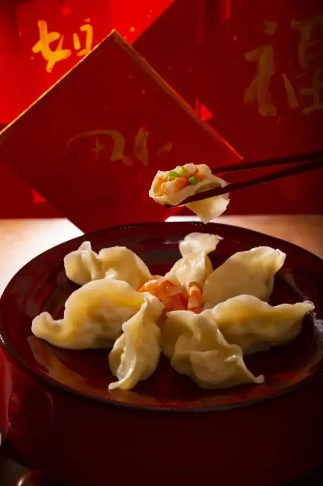
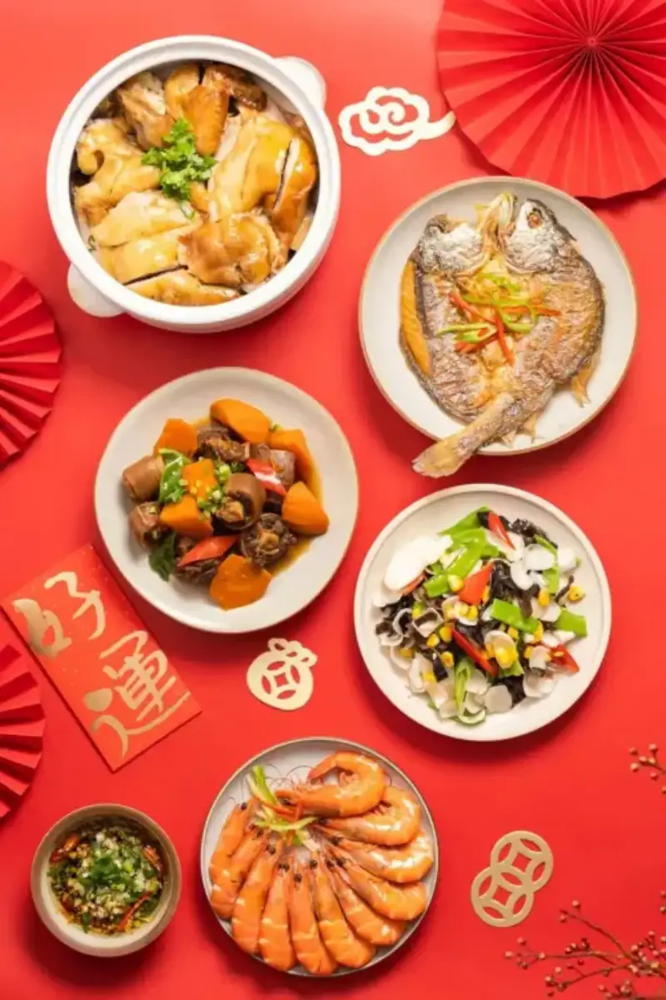
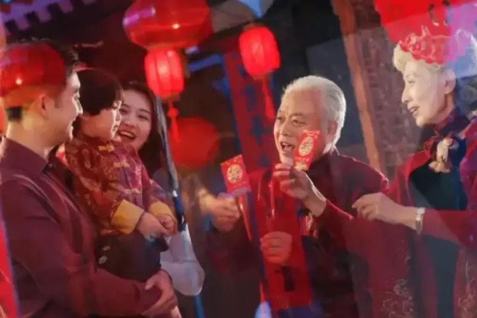
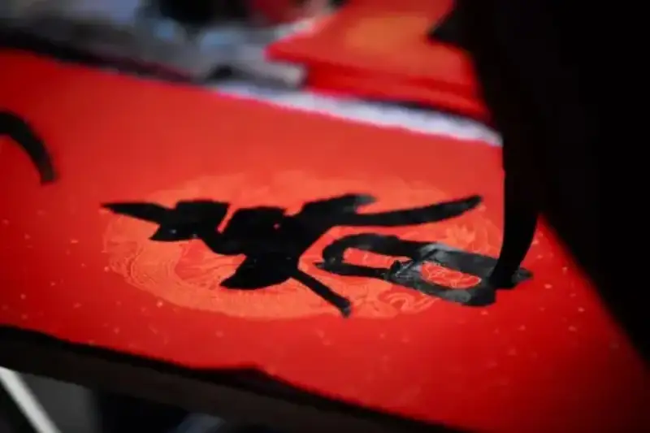
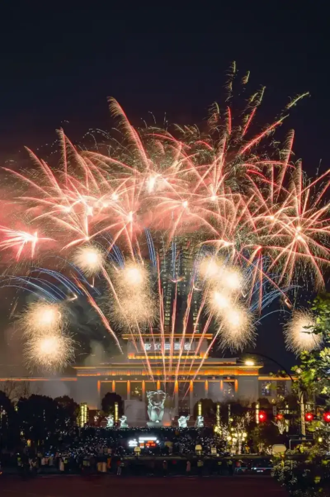
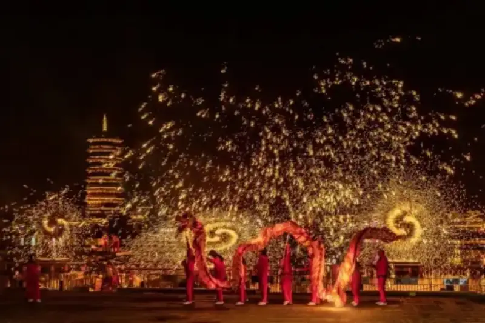
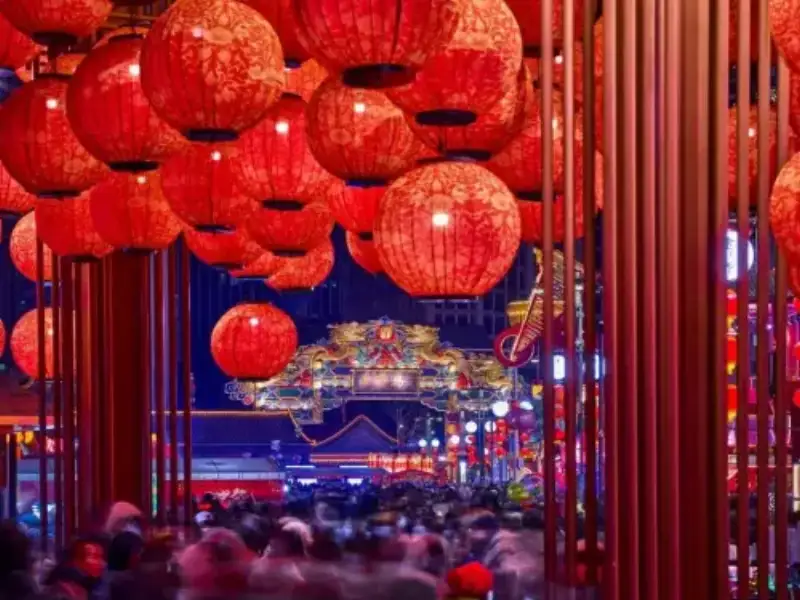
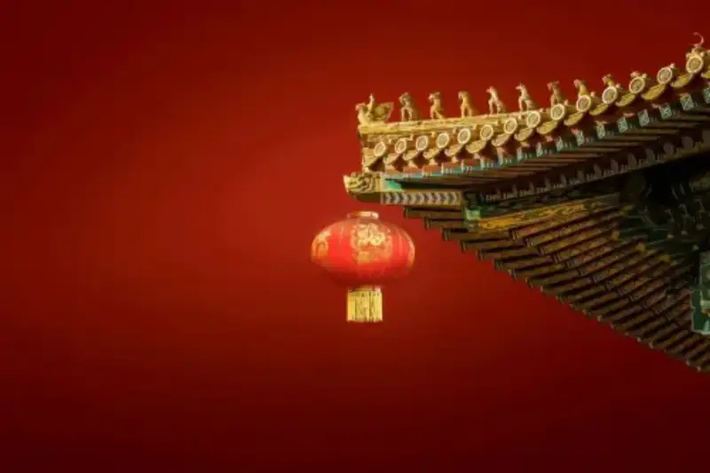

The Spring Festival is a long-standing traditional holiday of the Chinese nation. It carries deep culture and shared feeling. In the Year of the Snake, we will welcome the first Spring Festival on the World Intangible Cultural Heritage list. To show the unique charm of the festival, Visual China Group now calls on photography fans to send their best Spring Festival photos.
How do you catch the best Spring Festival moments and make your work stand out? These Spring Festival photography tips will help you send stronger entries and freeze the warm, lively scenes of the festival.
Traditional Spring Festival Food
Traditional Spring Festival food is a feast for both the taste buds and the eye. Steaming dumplings mean wealth and good luck. Delicate rice cakes mean rising year after year. Soft glutinous rice balls mean a happy family reunion. These foods all carry warm wishes.
When you shoot, focus on the details of the food, such as the rich layers inside a dumpling, the clear sheen of a rice cake, or the round plumpness of a glutinous rice ball. Let the food stand as a symbol of the new year, and pass on the warm feeling of the festival.

The lavish New Year's Eve dinner is a highlight of the festival. When you shoot, pay attention to the neat arrangement of the dishes and catch their color and texture. Shoot from above to show the whole table, take in the feast, and draw a warm picture of a happy family.

Portraits
Spring Festival portraits focus on family love and warmth. Family members sit together. The joy when elders give red envelopes to the young is one of the most precious memories of the festival. Try different angles and light, and catch the happy expressions on people's faces. Whether it is a warm moment between family members or the laughter of children at play, record these good moments and show the beauty and bustle of the festival.

Focus on Traditional Customs
The traditional customs of the Spring Festival pass on culture. Hanging spring couplets and lanterns, each custom carries deep meaning. When you shoot, focus on the calligraphy on the spring couplets and feel the good wishes in each stroke. Catch the warm glow of lanterns in the dark, build a warm and peaceful mood, and show the traditional feel of the festival.

Setting off fireworks is one of the Spring Festival customs. When night falls, fireworks burst in the sky, and brilliant light lights up the whole night. It is a visual treat and a sign of hope and energy for the new year. Use your camera to hold on to this brief beauty, and keep the traditional charm of the festival alive in light and shadow.

Spring Festival Celebrations
Celebrations during the Spring Festival are rich and varied. The joy of dragon and lion dances, the bustle of temple fairs, and the brightness of lantern shows, shoot these lively, happy scenes to show the festive mood.
Focus on the best moments of the dragon and lion dance. Freeze the instant when the dragon and lion twist and leap, and record the power and passion of the performers. The viewer almost feels they are there, and senses the warmth and joy of the scene.

When you shoot, try to catch these moments from different angles. For example, shoot lanterns at a lantern show from below, with the night sky as a backdrop, and string the lanterns into a beautiful picture. Use a temple-fair lantern as a foreground to show the lively festival mood. Record these vivid scenes and pass on people's love of life and their hope for the new year.

Still-life Decorations
Fine red lanterns hang high, festive Chinese knots sway gently, and auspicious paper-cuts dot the windows. These decorations add to the festive mood and have become visual symbols of the Spring Festival. When you shoot, focus on the warm glow of the red lanterns, catch the fine texture of the Chinese knots, and freeze the delicate patterns of the paper-cuts. Show the artistry of the festival.

When you shoot these still lifes and decorations, use creative composition. For example, line up the festive elements neatly to show their order. Soften the foreground to make the background subject stand out, or soften the background to make the foreground subject pop. This adds layers and depth to the photo.
The auspicious dragon leaves the old year, and the golden snake dances in the new. We look forward to photographers using their own view and creativity, catching the festive moments on camera, and freezing the moving scenes of the new year.